CS 184 · Fall 2026 · Ray Sun
Path tracer
Overview
I traced rays from the camera to find the visible surfaces, then used a BVH to speed up those intersection tests. From there, I added direct lighting, indirect bounces, and adaptive sampling.
The ceiling in the bunny scene made the biggest difference for me. It stays dark with direct light alone, then lights up once the floor and walls can reflect light onto it.
Part 1 · Ray generation and scene intersection
I pick a random point inside each pixel and map it onto the camera’s image plane at z = −1. The field of view sets the size of that plane. I rotate the direction into world space, normalize it, and set the ray’s near and far limits.
For triangles, I used Möller–Trumbore. It finds the ray distance t and two barycentric weights u and v. A zero determinant means the test has no unique hit. I accept the hit when t is in range and u, v, and 1 − u − v are all nonnegative. Those three weights also let me blend the vertex normals.
For spheres, I solve a quadratic and choose the closest root inside the ray’s limits. The normal points from the center to the hit. For both shapes, finding a hit shortens the ray so a farther surface can’t replace it.
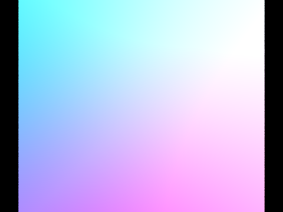
cube.dae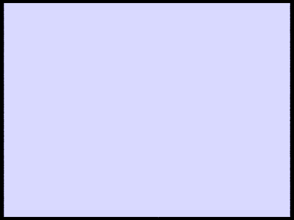
plane.dae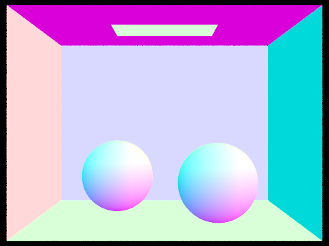
CBspheres_lambertian.daePart 2 · Bounding volume hierarchy
I enclose the scene geometry in a box and split it into smaller groups. For the median BVH, I find the axis where the centers of the primitive bounds spread out the most and split at the median. I stop when a leaf has four primitives or fewer.
I intersect the ray’s range with the box along each axis. If those intervals have no overlap, I skip the whole node. I check the nearer child first for a closest hit. If that hit is closer than the other child’s box, I can skip the other child too.
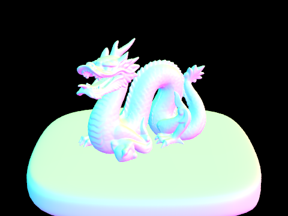
dragon.dae · 105,120 primitives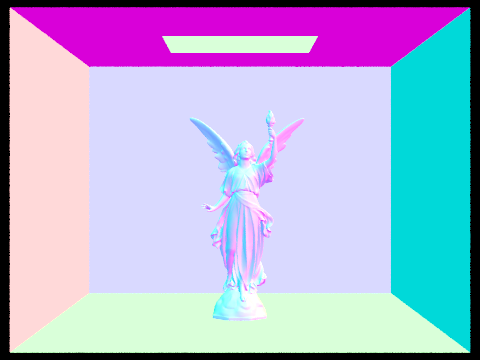
CBlucy.dae · 133,796 primitivesThe bunny benefited the most. Without the BVH, each camera ray checks all 28,588 primitives. With the median split, it checks about eight on average. That brought the render down from about 2.9 seconds to 11.5 ms.
Part 3 · Direct illumination
I count the light source’s own emission as zero-bounce light. For diffuse surfaces, I use the surface color divided by π as the BRDF.
For hemisphere sampling, I pick uniform directions above the surface and trace a ray in each one. A sample contributes light when its first hit is an emitter.
For importance sampling, I pick a point or direction from each light and check whether a shadow ray can reach it. I sample delta lights once and area lights multiple times. In both methods, I weight the incoming light by the BRDF and the cosine of the angle to the normal, divide by the sampling PDF, and average the samples.
Same light budget, two estimators
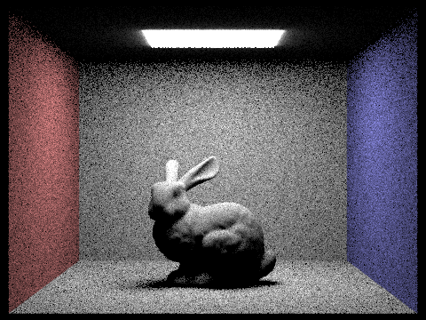
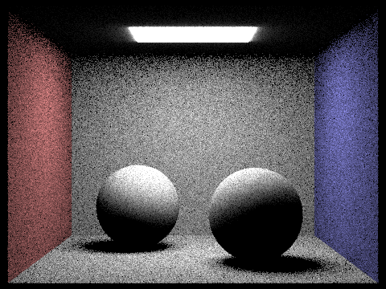
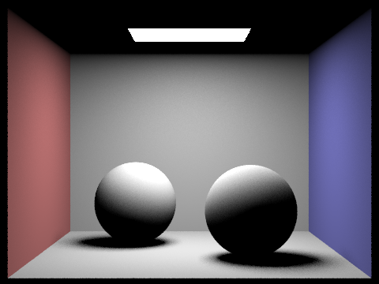
The hemisphere renders are much grainier. Most of those rays hit a wall or another surface that gives off no light. Sampling the light directly gives more rays a chance to contribute, so the walls and floor look smoother at the same sample count.
Soft shadows with one camera sample per pixel
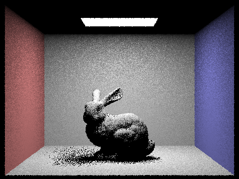
With one light sample, the shadow edge is speckled because each pixel gets a single blocked or clear ray. With 4, 16, and then 64 samples, the edge gets smoother as the estimate of how much light is visible improves.
Part 4 · Global illumination
I start with direct lighting at the first hit. To get indirect light, I sample a direction from the diffuse BSDF, trace it to the next surface, and repeat with one fewer bounce left. On the way back, I weight the returned light by the BRDF times the cosine, divided by the direction’s PDF. I add the direct estimate at each bounce included in the render.
Direct and indirect light
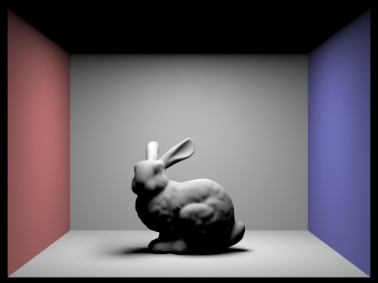
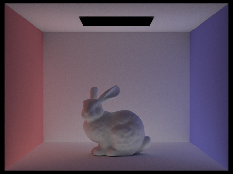
In the direct-only image, the bunny is lit from above and the underside is dark. Adding indirect light fills in that shadow and picks up color from the walls.
Another scene under global illumination
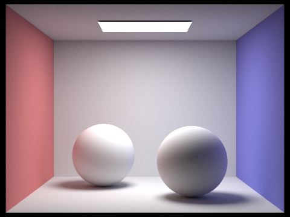
Part 4 · Bounce depth
The isolated images show one bounce at a time. The accumulated images add each bounce up through the selected depth. Depth 0 gives the light source itself. Both sets use 1,024 samples per pixel and one sample per light, with roulette disabled.
Isolated bounce -o 0
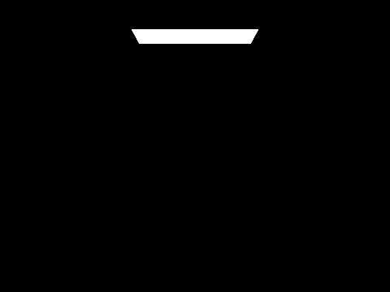
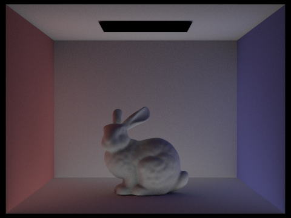
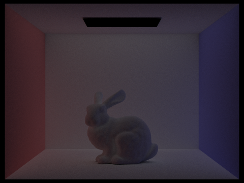
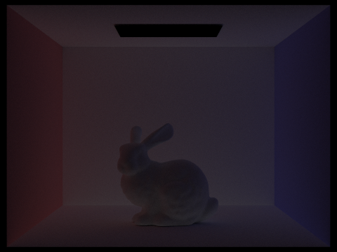
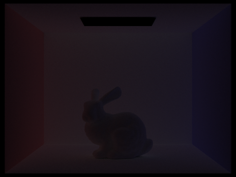
Accumulated through the selected depth -o 1
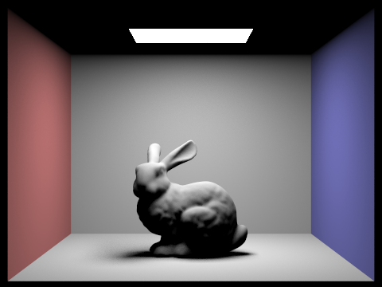
At bounce 2, light from the room reaches the ceiling and the underside of the bunny. Bounce 3 adds a weaker layer of red and blue from the walls. This is the kind of fill and color bleed that a direct-light rasterized render would miss.
Part 4 · Russian roulette
I always try the first indirect bounce when the depth allows it. After that, each bounce has a 65% chance of continuing. I divide the contribution of a surviving path by 0.65 to make up for the paths that stopped.
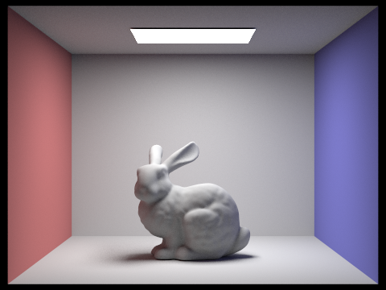
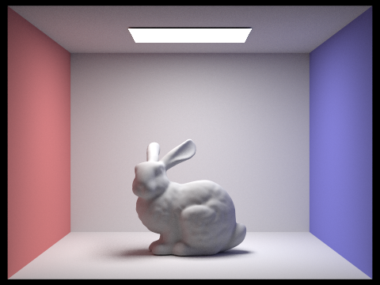
The depth-100 render is a little brighter near the ceiling, where the later bounces add up.
Part 4 · Camera samples per pixel
I kept the light samples at four and the depth at five. At low sample counts, the ceiling and the darker sphere look grainy. By 1,024 samples, the shadows and silhouettes look much smoother.
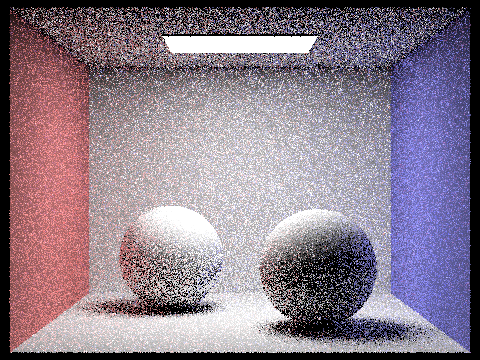
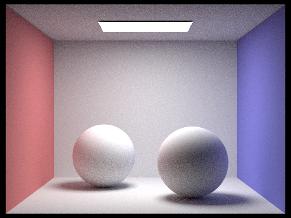
Part 5 · Adaptive sampling
I track the mean and variance of the luminance for each pixel. Every 32 samples, I check whether the 95% confidence interval’s half-width is within 5% of the mean. Once it is, I stop and divide the RGB sum by the samples actually taken. Otherwise, I keep going up to 2,048.
1.96 × σ / √n ≤ 0.05 × mean luminance
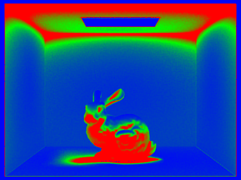
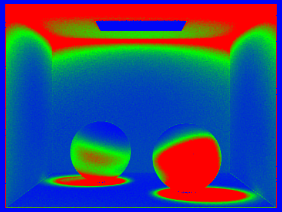
The light and flat walls settle quickly. The shadows, ceiling, and parts of the bunny and spheres stay noisy longer, so those areas use more samples.
Part 6 · Extra credit
Surface area heuristic for BVH splits
I started with the median split from Part 2. It balances the number of primitives in each child, but two equally sized groups can still have very different bounding boxes. For SAH, I put the primitive centers into 12 bins on each axis. Each bin stores a count and a bounding box. I sweep across the bins in both directions so I can get the left and right bounds at each split without scanning all the primitives again. Physically Based Rendering, §7.3.2
I score each split by multiplying each child’s surface area by its primitive count and adding the two products. A larger box is more likely to be hit, so that side matters more to the cost. I pick the lowest score and fall back to the median if the bins can’t split the group. I kept the traversal and the four-primitive leaf limit the same for both runs, so the main change was where the builder split each node.
SAH took longer to build but rendered faster in all five tests. The difference was small for the cow. Lucy got the biggest gain, from 159.3 ms to 88.3 ms. For the bunny, the build overhead used up the render savings on a single frame.

Part 6 · Randomized Halton pixel sampling
With random sampling, several camera rays can bunch up on one side of a pixel. I added a Halton sampler to spread them out. For sample index n, I reverse its base-2 digits and put them after the point to get x. I do the same in base 3 for y. For example, index 2 gives (1/4, 2/3). This fills gaps as the sequence grows and works with any sample count, including when adaptive sampling stops early. Physically Based Rendering, §8.6
I draw one random 2D shift per pixel and add it to every point in that pixel’s sequence. A coordinate that passes 1 wraps back into [0, 1). That way neighboring pixels get different patterns, while the samples within a pixel keep their spacing on the wrapped square. The change only affects where each camera ray enters the pixel. The light and bounce directions use the same samplers as before.
Dragon silhouette and Cornell box noise
I used six seeds per method with adaptive stopping disabled. For the dragon, I measured RGB error around the silhouette against a 512-sample reference. For the spheres, I measured how much the same back-wall pixels varied across runs. The wall stays clear of the silhouettes, so it shows lighting noise. The 1,024-sample render is included as a visual reference.
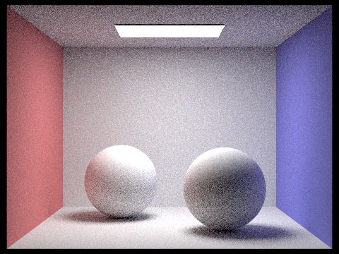
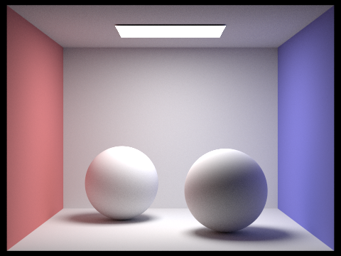
The error along the dragon’s edge fell by 23%. Noise on the spheres’ back wall rose by 1%. That makes sense to me because spreading out the samples helps cover thin geometry, while shadow rays and bounce directions still contribute their own variation.
Part 6 · Stack-based BVH construction and traversal
I kept the split calculation the same and moved the recursive work onto a std::stack. During construction, a stack entry holds a range of primitives and where its node belongs. I pop a range, build its node, and push the right range before the left one so the left node still gets built first. Both modes make their splits with the same SAH code.
For a closest-hit ray, I stay on the nearer child and push the farther child and its entry distance. By the time I pop it, a hit may have shortened the ray, so I can skip that child if its box is now too far away. Shadow rays visit the left child first and stop at the first blocker. I clear any pending entries for that ray before reusing the stack. Each worker keeps its own storage so it can reuse the same allocation across rays.
I alternated the order of the recursive and stack runs and took the median of five runs per mode. I fixed the seed and used one render thread. The paired images matched pixel for pixel, with the same ray and primitive-test counts. The bunny uses actual lighting so the test includes shadow rays as well as closest-hit rays.
Build times were close. The stack helped most on Cornell Lucy, where render time fell by 6%. On the lit bunny, render time rose by 2%. Since the trees and primitive-test counts matched, the speed difference comes from how each version handles pending nodes. I kept recursion as the default and made the stack version selectable.